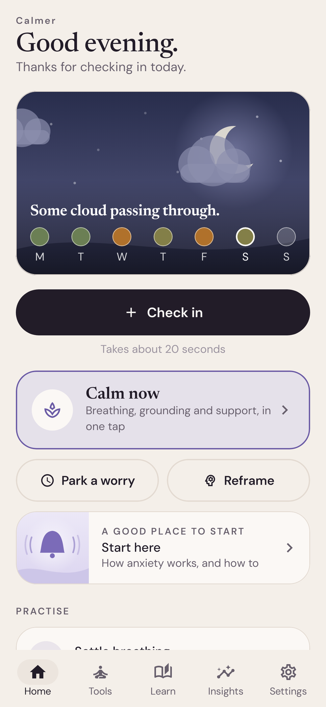
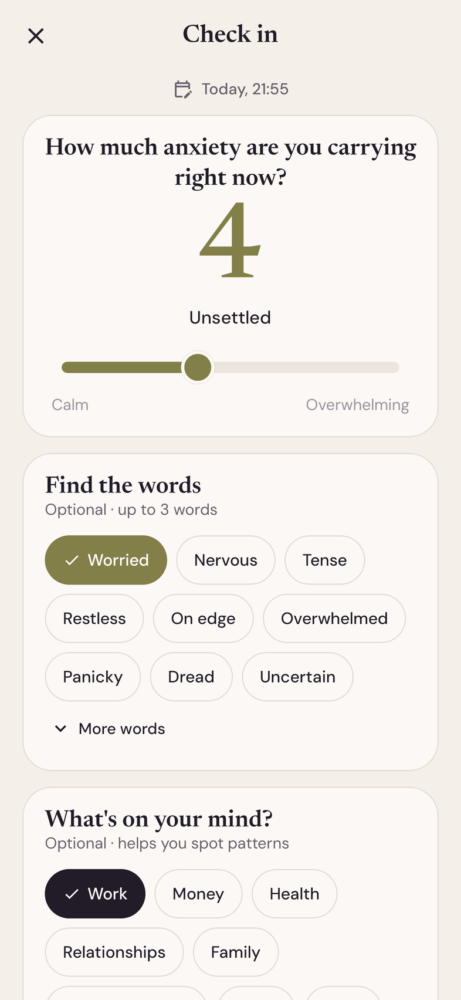
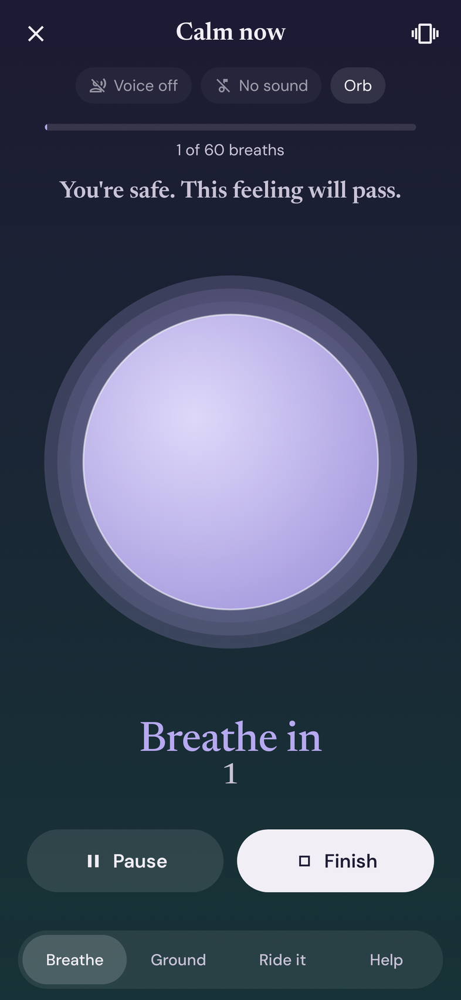
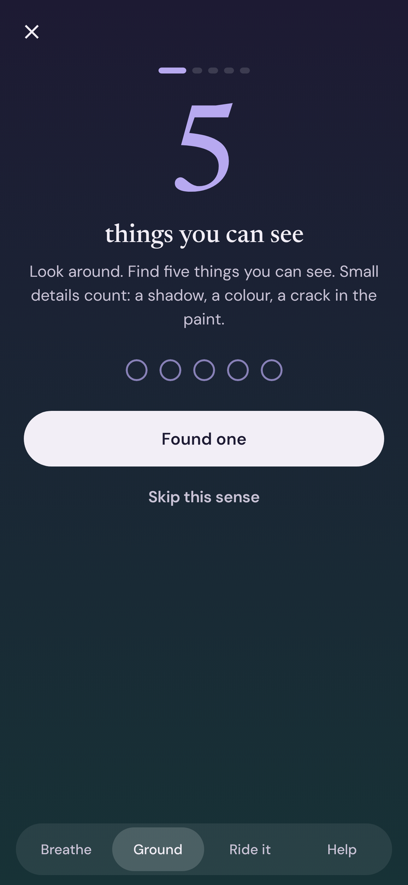
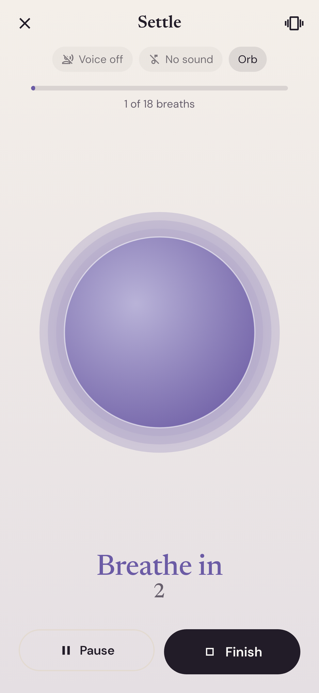
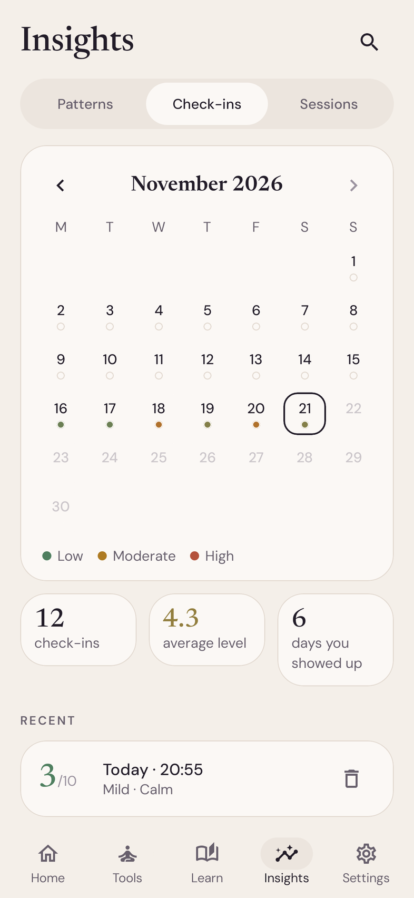
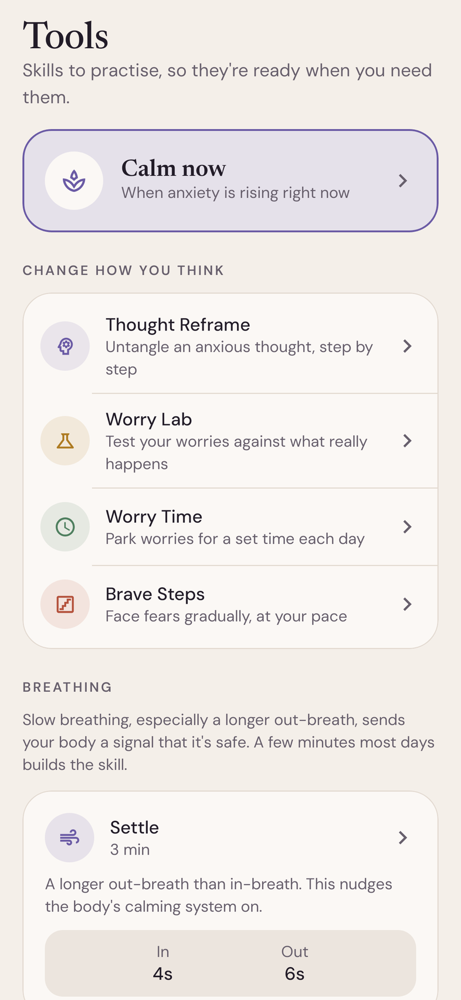
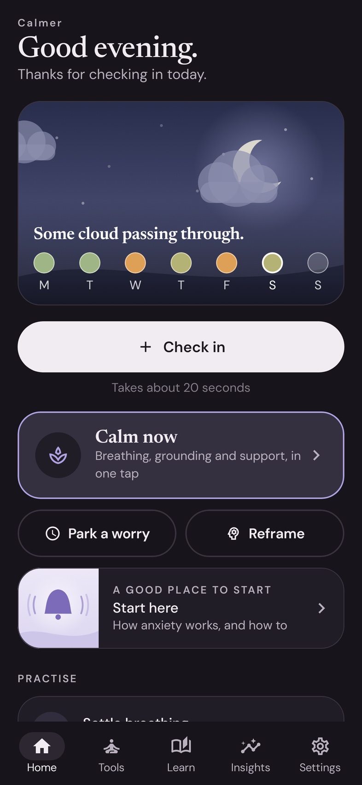

You're safe. This feeling will pass.
Calmer is an anxiety self-help app for Android. Check in for twenty seconds a day, calm the hard moments with breathing and grounding, and change the pattern with short lessons and the tools of cognitive behavioural therapy.
It is free, with no adverts and nothing to unlock. There is no account, everything is encrypted on your phone, and nothing is sent to the developer.
Download for AndroidHow to install
- Version 1.0.0
- Android 8 or later
- 3.1 MB
Free, with nothing to unlock. No adverts, no account with the developer, no tracking. Compare or read the release notes.
Chrome may say the file might be harmful. It shows this for app files that do not come from Google Play. Choose Download anyway.

- No subscriptionEvery lesson and tool is in the free app.
- No advertsNone in the app and none on this site.
- EncryptedEverything kept on your phone, locked.
- Calm nowBreathing and grounding in one tap.
A look inside
These are the real screens, drawn from the app's own code with made-up check-ins. Swipe or scroll sideways to see them all.







How it works
Anxiety shrinks when you understand it, have a way through the hard moments and practise facing it a little at a time. Calmer gives you all three, and never pushes.
Check in
Tap Check in once or twice a day. Twenty seconds is enough, and every check-in teaches you something about your own patterns.
Calm the moment
When it surges, Calm now breathes with you, brings you back to the room and keeps help close by.
Change the pattern
Short lessons, five-day programmes and CBT tools help you test worries and take brave steps. Insights shows what is working.
Everything is in, and all of it is free
Nothing below is held back for a paid tier, because there is no paid tier.
Every day
- Check in in twenty seconds
- Slide to how anxious you feel from 0 to 10, then add the feeling, where it sits in your body and what helped, if you want to.
- Calm now, in one tap
- Guided breathing, 5-4-3-2-1 grounding, a timer for riding out panic and the help lines, on one screen.
- Six ways to breathe, and your own
- Settle, cyclic sigh, box, resonant, 4-7-8 and a gentle pattern, with vibration and spoken cues.
CBT tools
- Thought Reframe
- A step-by-step thought record with eleven thinking traps and a more balanced view at the end.
- Worry Lab and Worry Time
- Test a worry's prediction against what happened, or park it until a time you choose.
- Brave Steps
- Face a fear one small step at a time, and watch the gap between expected and real anxiety open up.
Learning
- 37 short lessons
- Two or three minutes each, in eight topics, from how anxiety works to sleep and work.
- Ten five-day programmes
- Each day has a lesson, something to try and one question to reflect on.
Your record
- Insights
- When anxiety tends to rise, what sets it off and which tools help most, each marked by how much it rests on.
- A monthly questionnaire
- The GAD-7, once a month if you want it, with a chart of your scores.
- A report for your GP
- A clear PDF of check-ins, patterns and scores, previewed before you share it.
Private by design
- Locked and discreet
- Encrypted on your phone, with a PIN or fingerprint lock, and a home-screen name and icon of your choice.
- Backup you control
- A password-locked backup file and a daily copy to a folder you pick.
- Health Connect, if you like
- Compare how you feel with sleep, steps and heart rate.
Your feelings are your business
Encrypted on your phone
Everything you enter is stored encrypted on the phone. The developer receives nothing.
No account, no servers
There is nothing to sign up to and nowhere your notes are sent.
No ads, no tracking
There is no advertising, analytics or tracking, in the app or on this site.
Installing and updating
Calmer is not on Google Play, so your phone asks a couple of extra questions the first time.
Download the app file
Tap Download on your phone. The file is called Calmer.apk and is about 3.1 MB. If Chrome says the file might be harmful, choose Download anyway.
Allow the install
Open the file. The first time, Android asks you to allow your browser to install apps. Allow it, go back and tap Install. If Google Play Protect steps in, choose More details, then Install anyway.
Updating later
Calmer never goes online, so it cannot check for updates itself. New versions are listed on the release notes page: install the new file over the old one and everything you have saved is kept.
Version 1.0.0, released 21 November 2026. See the release notes, or check your download.
Questions
Is Calmer really free?
Yes. There is no paid version, no subscription, no trial and no adverts, and nothing in the app is locked. The report for your GP or therapist is free too.
Is it on Google Play?
No. Calmer is a personal project and is downloaded from this site as an Android app file. It needs Android 8 or later, which covers almost every phone in use.
Does it need the internet?
No. The app does not ask Android for internet access at all, so it cannot go online. Links to help lines and NHS pages open in your own phone or browser.
Where is my information kept?
Only on your phone, in the app's private storage, encrypted with a key held by Android. Nothing is uploaded, and the developer receives nothing.
Is Calmer a treatment or a therapist?
No. It is a self-help tool built on methods from cognitive behavioural therapy. It can sit alongside care from your GP or a therapist, but it does not replace it, and it is not a medical device.
What if I am in crisis?
Calmer is not a crisis service. Call 999 if you or someone else is in danger. Samaritans are free on 116 123, day or night, and you can text SHOUT to 85258. In England, NHS 111 option 2 is for urgent mental health help.
Why can I change the app's name and icon?
Some people would rather an anxiety app did not announce itself on their home screen. You can show it as Calmer, Breathe, Journal, Notes, Daily or Stillpoint, with one of eight pastel icons.
What if I forget my PIN?
There is no way round the PIN, not even for the developer. You can clear the app's storage in your phone's settings, which deletes everything, and then restore your latest backup.
Do I need Health Connect?
No. It is optional. Without it, Insights still compares how you feel with the sleep and caffeine you add to check-ins.
How do I move to a new phone?
In Settings, open Backup and export, set a backup password and save a backup file. Install Calmer on the new phone, choose Restore from a backup and enter the same password.
Why did a reminder arrive late?
Reminders are gentle by design and Android can hold them back by a few minutes to save battery. They never ring during your quiet hours.
Who made it?
Calmer is made by Jonathan Jackson, an independent developer in the United Kingdom. It is not connected with the NHS or any other app maker.
A calmer day, a check-in at a time
Free, with no adverts and nothing to unlock. Made by the developer of several other free Android apps: see them all.